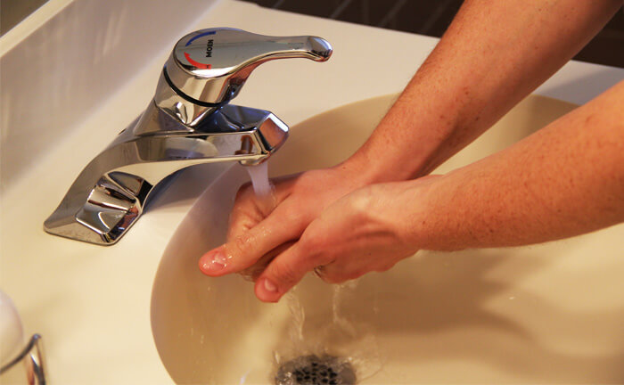
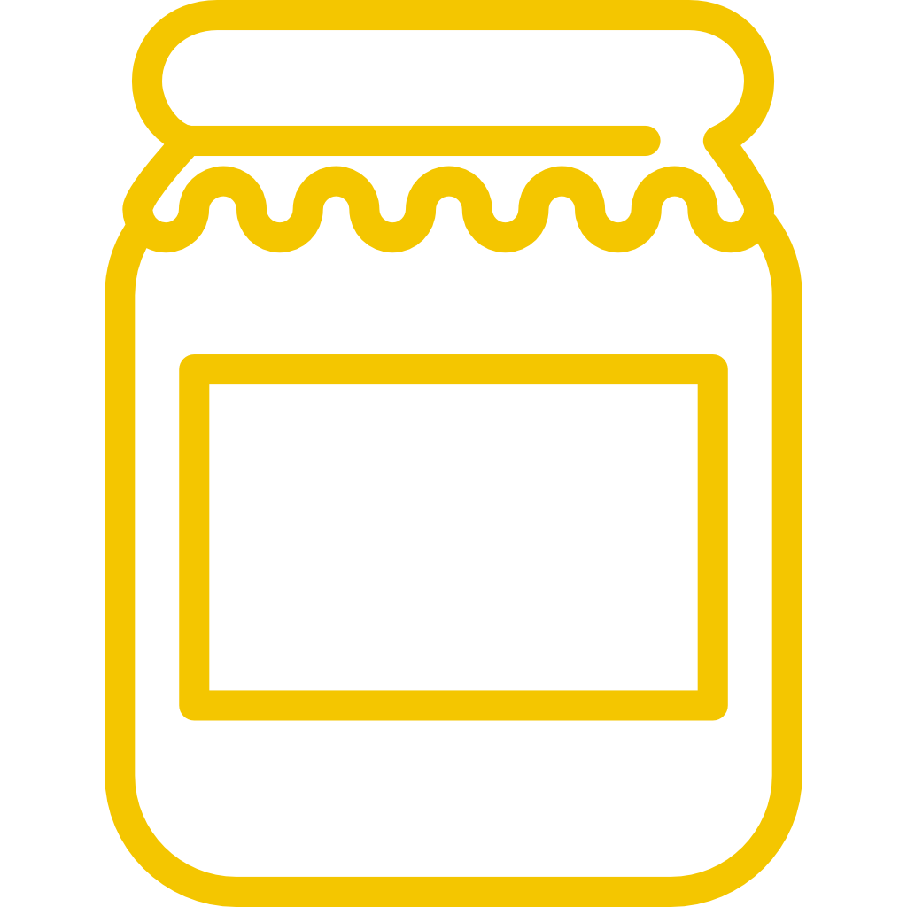
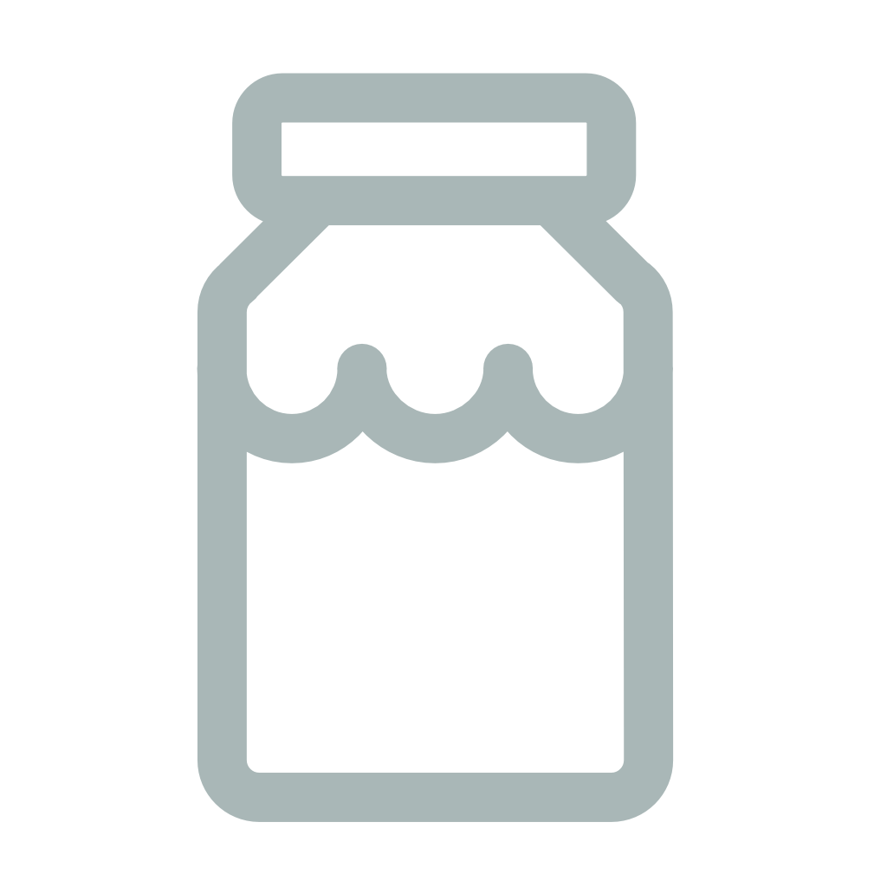

第一招：养成良好生活习惯
保持家里空气清洁湿润。外出回到室内时，要注意个人卫生，洗脸洗手，养成良好习惯。尽量避免用手频繁抚摸脸或揉鼻子。
小贴士：呼吸道敏感的亲，尽可能不使用羽绒床上用品。如保管洗涤不当，会滋生更多的细菌，影响我们的呼吸道。
第二招：选择合适锻炼时间
容易过敏的亲们要避免在上午和下午锻炼，由于花草树木在日出时开始释放花粉，在临近中午到下午期间，空气中花粉浓度将达到最高值，所以专家建议，如果外出锻炼，最好选择傍晚或者晚上。
小贴士：运动饮品选择富含维C的品类，同时多摄入富含多种营养的食品，让身体在运动过程中更好地吸收，同时提高免疫力，抵抗细菌侵害。
第三招：定期整理好毛绒玩具
毛绒玩具虽然可爱，但很容易吸灰尘，如果家里有易过敏的小朋友又经常接触毛绒玩具，最好在孩子不玩耍时将毛绒玩具收起来，并随时清洗。
小贴士：尽量避免给过敏的孩子购买毛绒玩具，空气好有阳光时可以将毛绒玩具拿出来晒晒，这是最好的除螨方式。
第四招：关好窗，尽量少外出
如果必须外出，我们最好戴上口罩，而且回家后记得洗手，换上干净衣服，同时马上清洗沾有花粉的衣物。空气净化器是净化空气、祛除粉尘、动物毛发、花粉的利器！
小贴士：家里的净化器一定要经常跟换滤芯哦！另外小编咨询了一些专业人士，建议大家尽量选择物理净化类型的净化器，比较安全。
第五招：多吃抗过敏食物
洋葱：不管是生吃或熟吃都可以给我们的抗过敏工作带来意想不到的效果。
西红柿：含有丰富的维生素C，可以帮助我们抑制炎症，防止过敏症状出现。
蜂蜜：预防过敏的原因有两个：一是其中含有微量蜂毒。蜂毒在临床上被用于支气管哮喘等过敏性疾病的治疗。二是其含有一定量的花粉粒，经常饮用能产生对花粉一定的抵抗能力。
酸奶：乳酸菌能增强人体抵抗力，从而适当缓解过敏症状。
小贴士：蜂蜜可以和酸奶一起搭配，既能满足甜的需求，又能均衡营养，是非常好的搭配选择。
 分享
分享